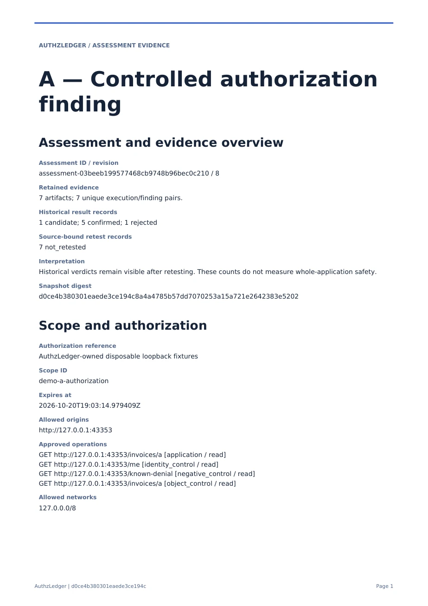

Retest-Übersicht
Ein Befund ist als fix_verified dokumentiert, einer als not_retested.
- Befund-ID
—- SHA-256 des ursprünglichen Befunds
—- SHA-256 des nachgeprüften Befunds
—
Lokale Proof-Workbench · Stable 1.5.0
Know who can do what. Prove what changed.
Für Pentester und AppSec-Teams. AuthzLedger verbindet einen Befund mit seinen Kontrollen, den Retest mit seiner Quelle und die Übergabe mit einem signierten Inventar.

fix_verifiednot_retestedBeweis-Cockpit · Demo C / 1.5.0
Im selektiven Retest wurden zwei ursprüngliche Befunde betrachtet und einer nachgeprüft. Wählen Sie einen Befund oder prüfen Sie die Signatur des Originalinventars direkt im Browser.
Ein Befund ist als fix_verified dokumentiert, einer als not_retested.
———Ed25519 · Empfängerprüfung
Vergleichen Sie Original und Testkopie. Die Prüfung nutzt den öffentlichen Demo-Schlüssel und kontrolliert zusätzlich den SHA-256-Wert des gespeicherten Report-Ankers.
Die Prüfung gilt für das Demo-Inventar und den Report-Anker. Die vollständigen Anhänge gehören zur separaten Paketprüfung.
Originalinventar (JSON)Workflow · Stable 1.5.0
Bei der Übergabe eines Pentests fehlen oft die Verbindungen zwischen Tool-Export, Kontrollfall und Nachprüfung. AuthzLedger hält diese Nachweise für ein Mandat in einem lokalen Assessment zusammen.
Scope festlegen und vorhandene Traffic- oder Scanner-Exporte mit ihrer Herkunft erfassen.
Erlaubten Scope, Prüfprofil und Budget im Mandat festhalten.
Eine Bestätigung erfordert gültige Kontrollen zum Fall. Ein importierter Hinweis behält seine Herkunft und seinen Belegstatus.
Ausgewählte Befunde mit ihrer Quelle vergleichen. Ausgelassene Fälle bleiben sichtbar.
Den Bericht als Snapshot mit Ed25519-signiertem Inventar übergeben. Den öffentlichen Schlüssel separat abgleichen.
Import-Adapter · Stable 1.5.0
Die Adapter lesen vorhandene Exporte. AuthzLedger ordnet Beobachtungen und Hinweise ihren Quellen zu. Ob ein Befund bestätigt ist, entscheidet erst der kontrollierte Nachweis.
Historische Belege · 1.5.0
Drei synthetische Fälle aus Version 1.5.0 zeigen, wie Kontrollen, Beobachtungen und Retest-Entscheidungen zusammenhängen. Jeder Kurzfilm zeigt einen historischen Demolauf.
Demo A · Autorisierung
Der geschützte Marker im Antwortinhalt und gültige Kontrollfälle belegen die konkrete Offenlegung. Bei ungültiger Kontrolle bleibt die Auswertung unentscheidbar. Ein HTTP-200-Fehlerobjekt wird als Beleg verworfen.

Demo B · Inventar
Das lokale Assessment verbindet erfasste Dienste und HTTP-Beobachtungen mit der anschliessenden Prüfung. Bestätigt wird, dass der ausdrücklich verlangte Antwortheader fehlt. Die Ausnutzbarkeit bleibt offen.

Demo C · Retest
Von zwei ursprünglichen Befunden wird einer gezielt nachgeprüft. Der andere bleibt not_retested. Beide Verifier weisen die Paketkopie zurück, sobald sich ein Byte ändert.
Produktfilm · 56 Sekunden
Der Film zeigt Originalberichte, Kontrollen und Retests. Er kennzeichnet den geplanten Purple-Workflow als Ausblick. Im separaten Lab können Sie vier synthetische Signalzustände vergleichen.
Downloads und Installation
Die stabile Workbench und der eigenständige Empfängerprüfer haben unterschiedliche Aufgaben. Die Installationsseite nennt für jedes verfügbare Paket die Voraussetzungen, den Prüfstand und die Prüfsumme.
Python-Wheel und Quellarchiv gehören zum veröffentlichten Release. Der Release-Prüfstand ist als JSON dokumentiert.
Prüfprotokoll der VeröffentlichungWiederholungsprüfung auf GitHubDer separate Prüfer kontrolliert ein erhaltenes Paket lokal. Der Windows-x64-Prüfer läuft ohne separat installiertes Python oder OpenSSL. Weitere Formate sind Debian-Paket, natives Arch-Paket mit Baurezept, Linux-amd64-Docker-Image, Wheel und Quellarchiv.
Downloads und PrüfsummenFür die vollständige Workbench ist hier kein getestetes PyInstaller-, Debian- oder Arch-Release freigegeben. Version 1.6 bleibt in technischer Prüfung.
InstallationsanleitungCommercial · Schweizer Franken
Sie vereinbaren einen konkreten Übergabefall und den erlaubten Scope. Zum Abschluss prüft der Empfänger das Paket, ordnet den nachgewiesenen Fix zu und benennt die offenen Fälle.
Pilot · 30 Tage
Einmalig für zwei benannte Nutzer und ein autorisiertes Mandat.
Pilot anfragenFür die professionelle Einzelnutzung.
Für gemeinsam arbeitende Pentest- und AppSec-Teams.
Mandatsumfang und Konditionen nach schriftlicher Offerte.
Für Investoren
Positionierung, Belegmodell, Preise und Freigabestand auf einer Seite.
Investor-One-Pager (PDF)Lab · Synthetische Daten
Das öffentliche Lab zeigt ausgewählte Experimente der Zielversion 1.6. Die kommerzielle Produktbasis bleibt 1.5.0.
Zum separaten Lab